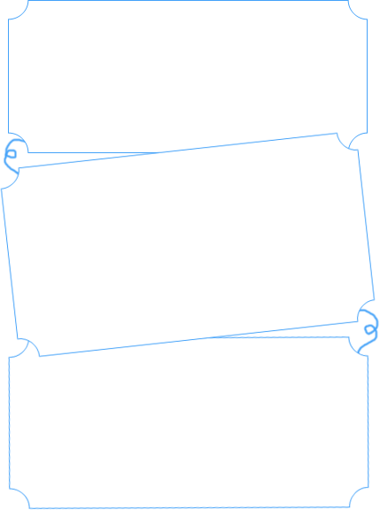
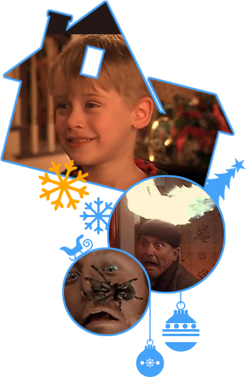

줄거리
줄거리




이제 혼자 남은 꼬마 캐빈의 기발한 집지키기 전쟁이 시작된다! 크리스마스 시즌의 시카고. 말썽꾸러기라 집안 가족들로부터 욕을 듣고 따돌림 당하는 케빈은 늘 자신은 혼자 살거라면서 가족들이 모두 없어졌으면 좋겠다고 생각한다. 자기의 치즈 피자를 먹은 형과 싸워 소동을 일으키자엄마는 케빈을 3층 다락방으로 올려보낸다.
케빈의 가족들과 케빈의 집에 온 손님들은 다음 날에 크리스마스 연휴를 이용해 프랑스의 친척 집으로 떠날 계획이었다. 그날 밤, 바람이 세차게 불어 전화선과 전기선이 끊긴다. 케빈의 가족들은 늦잠을 자게 되어 비행기 시간을 맞추기 위해허둥대다가 그만 3층 다락방에서 잠이 든 케빈을 두고 떠난다. 잠에서 깬 케빈은 혼자 남은 것을 알고 하느님이 자신의 소원을 들어주었다고 기뻐한다. 비행기를 타고 가던 케빈의 어머니는 무엇인가 빠뜨린 기분에 고민하다가 케빈을 두고 왔음에 놀란다.
하지만 전화선이 불통이라, 어쩔 수 없다가 프랑스에 도착한 식구들은 목적지로 가고 엄마는 케빈이 걱정이 되어 집으로 돌아갈 비행기표를 사기 위해 안간힘을 쓰지만 연말연휴라 좌석이 없다. 혼자 집에 남은 케빈은 형과 누나 방을 구경하면서 즐거워한다. 그리고 노래를 부르고 트리도 만들면서 자축한다. 그런데 빈집털이 2인조 도둑이 케빈의 집을 호시탐탐 노리고 있다는 것을 알게 되는데...